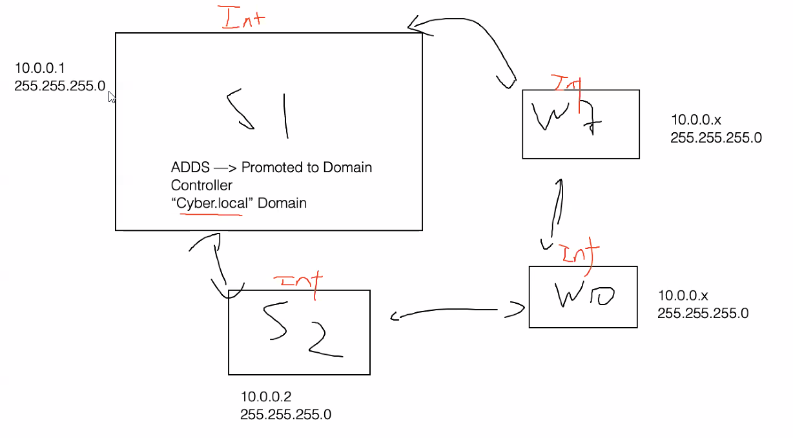

Adding domans allow the other machines to comunicate



Top level Domain, Second-level domain, subdomain, subdirectory, scheme. These are the 5 main componenets of a URL
https://drive.google.com/drive
drive. <-- sub domain
https:// <--- the scheme of the url
google.com <--- the second-level domain
.com <----- the top level domain
/drive/ <----- sub directory


PKI - public key infrastructure <-- how a website verifies redirect (i.e drive.google.com)